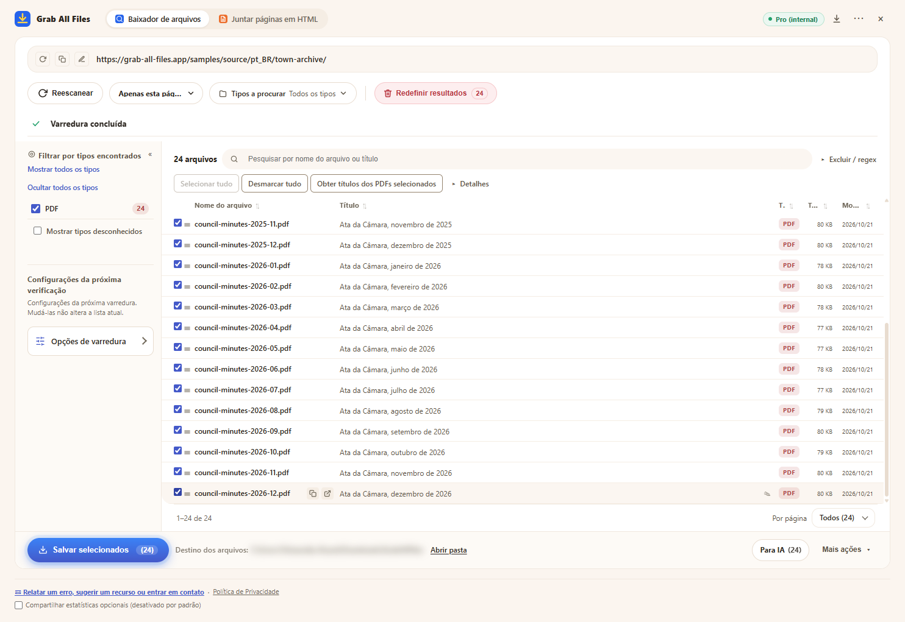

Resultado real do Grab All Files
24 PDFs baixados em uma única execução (Pro)
O arquivo de atas da Câmara de uma cidade fictícia (uma ata por mês, de janeiro de 2025 a dezembro de 2026: 24 PDFs) foi analisado, todos os PDFs foram selecionados e salvos em uma única execução. O plano Grátis salva até 10 arquivos por download, então seriam necessárias três execuções; o Pro não tem limite por download. Os nomes dos arquivos foram dados pela extensão a partir do título de cada PDF.
Arquivos gerados
- Ata da Câmara, janeiro de 2025.pdf
- Ata da Câmara, fevereiro de 2025.pdf
- Ata da Câmara, março de 2025.pdf
- Ata da Câmara, abril de 2025.pdf
- Ata da Câmara, maio de 2025.pdf
- Ata da Câmara, junho de 2025.pdf
- Ata da Câmara, julho de 2025.pdf
- Ata da Câmara, agosto de 2025.pdf
- Ata da Câmara, setembro de 2025.pdf
- Ata da Câmara, outubro de 2025.pdf
- Ata da Câmara, novembro de 2025.pdf
- Ata da Câmara, dezembro de 2025.pdf
- Ata da Câmara, janeiro de 2026.pdf
- Ata da Câmara, fevereiro de 2026.pdf
- Ata da Câmara, março de 2026.pdf
- Ata da Câmara, abril de 2026.pdf
- Ata da Câmara, maio de 2026.pdf
- Ata da Câmara, junho de 2026.pdf
- Ata da Câmara, julho de 2026.pdf
- Ata da Câmara, agosto de 2026.pdf
- Ata da Câmara, setembro de 2026.pdf
- Ata da Câmara, outubro de 2026.pdf
- Ata da Câmara, novembro de 2026.pdf
- Ata da Câmara, dezembro de 2026.pdf
A extensão com 24 PDFs selecionados, logo antes de salvar (o local de salvamento está desfocado)

Como foi feito
- Página de origem
- /samples/source/pt_BR/town-archive/
- Extensão
- Grab All Files 5.8.31
- Navegador
- Chrome 156.0.8078.48 (Windows 11)
- Plano
- Pro
- Feito em
- 2026-10-28
- Configurações
- Profundidade dos links: Apenas esta página
- Tipo de arquivo: somente PDF
- Arquivos selecionados: 24
- Salvo em: a pasta de downloads do navegador (pasta GrabAllFiles)